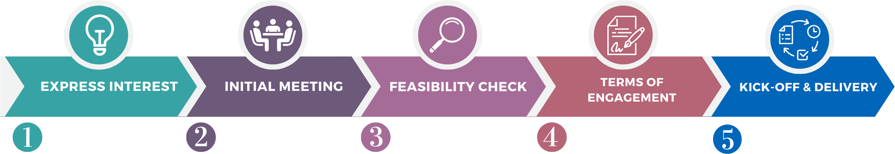

We support researchers from all across Australia in formats most suited for their specific projects. To read about some of the projects we have supported, see our case studies. The Digital Observatory works with researchers through a collaborative process. The aim of the process is to reach a mutual agreement on feasibility, scope, timeline, deliverables, and costs. This ensures researchers are given the support that is best tailored to their specific projects.

Interested researchers can contact the Digital Observatory via email or submitting an enquiry form. To help us better understand how the Digital Observatory can assist with your project, include as much information as possible in your enquiry such as:
Upon receipt of your enquiry, the Digital Observatory will get in touch to schedule an initial meeting to further discuss your project requirements. This meeting usually takes one hour and can be held over Zoom or in person.
The Digital Observatory will undertake preliminary investigations to determine whether we can support you with your specific project.
This may involve one or more of the following:
Depending on the scale and complexity of your project, this may take anywhere from a few days to a few weeks. It may also require several iterations and collaborative inputs from researchers.
This phase involves the researchers and the Digital Observatory working together to agree on the project scope, deliverable(s), due date(s), and cost (if applicable). All of this information is collated into a Terms of Engagement document, which is a non-contractual agreement between the researcher(s) and the Digital Observatory.
For external researchers (not from Queensland University of Technology [QUT]), a contractual QUT Services Agreement is to be signed by the researcher(s) and the Digital Observatory.
Researchers might be required to provide human research ethics clearance and/or a data management plan at this phase, as appropriate.
The project formally starts when the Terms of Engagement and QUT Services Agreement have been signed by all parties. The project concludes when all agreed deliverables are provided to the researcher in accordance with the Terms of Engagement.
Deliverables might go through several rounds of iterations based on inputs from researchers.
The Digital Observatory aims to keep costs low for researchers by charging a cost-recovery rates or on an in-kind basis.
Digital Observatory services can be costed into your grant application or proposal (e.g., ARC Discovery, ARC DECRA, and others). Doing so provides your grant application or proposal a competitive advantage, since the Digital Observatory has a proven track record of providing research support in many disciplines including the humanities.
We encourage researchers to get in touch with the Digital Observatory as early as possible in the grant writing process so that we can help define and cost the Digital Observatory support for the research.
To comply with human research ethics and data governance, researchers may have to provide ethics clearance and/or a data management plan specific to the project.
Researchers may also be required to provide inputs throughout the project. For example, if the project requires data from one of our databanks, researchers may be asked to provide a list of keywords and/or hashtags to be used for data collection, as well as the details of any analysis to be performed on the data so that the Digital Observatory can ensure that the data will be suitable.